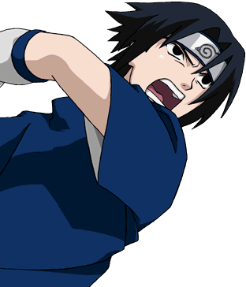
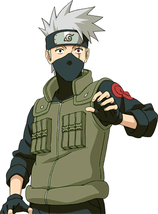

The Valuable personalities in Naruto Uzumaki's Journey
Sasuke Uchiha
Sasuke Uchiha is Naruto's best friend and rival. Their relationship is complex, evolving from competition to deep friendship. Sasuke's quest for power and revenge often puts him at odds with Naruto, but their bond remains unbreakable. Naruto's determination to bring Sasuke back to the village is a central theme in the series.
Sakura Haruno
Sakura Haruno is Naruto's teammate and a skilled ninja in her own right. Initially infatuated with Sasuke, she grows to become a formidable fighter and a crucial member of Team 7. Her relationship with Naruto evolves from mild annoyance to deep respect and friendship as they support each other through their adventures.
Kakashi Hatake
Kakashi Hatake is the mentor of Team 7 and plays a significant role in Naruto's growth as a ninja. Known as the "Copy Ninja," Kakashi's wisdom, skill, and leadership profoundly influence Naruto and his teammates. His teachings and support help shape Naruto's path to becoming a great ninja.